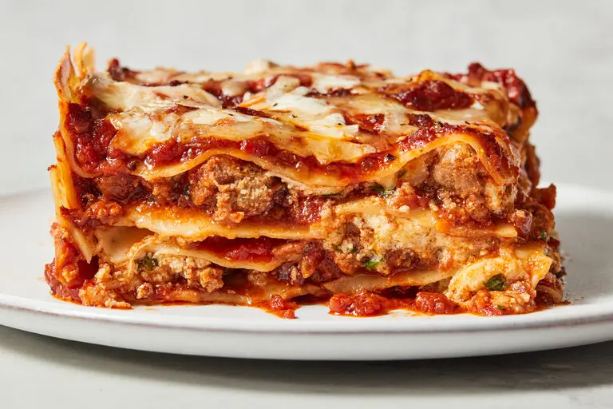

Lasagna
Home

Description
In 2001, Regina Schrambling went on a week long odyssey in search of the best lasagna recipe. Her ideal here has an intensely flavored sauce, cheeses melted into creaminess as if they were bechamel, meat that’s just chunky enough and noodles that put up no resistance to the fork.
Ingredients
- 2 teaspoons extra virgin olive oil
- 1 pound ground beef chuck
- 1/2 medium onion, diced (about 3/4 cup)
- 2 cloves garlic, minced
- 1 (28-ounce)can good-quality tomato sauce
- 3 ounces tomato paste (half a 6-ounce can)
- 1 (14 ounce) can crushed tomatoes
- 2 tablespoons chopped fresh oregano, or 2 teaspoons dried oregano
- 1 tablespoon red or white wine vinegar
- Salt
- 1/2 pound dry lasagna noodles (requires 9 lasagna noodles - unbroken)
- 1 1/2 pounds (24 ounces) mozzarella cheese, grated or sliced
Method
-
Put a large pot of salted water (1 tablespoon of salt for every 2 quarts of water) on the stovetop on high heat. It can take a while for a large pot of water to come to a boil (this will be your pasta water), so prepare the sauce in the next steps while the water is heating.
-
Put a large pot of salted water (1 tablespoon of salt for every 2 quarts of water) on the stovetop on high heat. It can take a while for a large pot of water to come to a boil (this will be your pasta water), so prepare the sauce in the next steps while the water is heating.